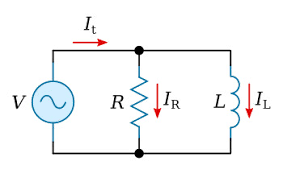

LR circuits consist of an inductor and resistor connected in series. When a voltage is applied, the current doesn't immediately reach its maximum value due to the inductor's opposition to changes in current. The current increases exponentially with a characteristic time constant.
These circuits are fundamental for understanding how inductors behave in DC circuits and are important for analyzing electromagnetic devices, filters, and power electronics.
Key Formulas
Time Constant
\[ \tau = \frac{L}{R} \]
Where:
\(\tau\) is the time constant (s)
\(L\) is the inductance (H)
\(R\) is the resistance (Ω)
Note: This formula is NOT on the AP Physics C equation sheet.
Current as Function of Time
\[ I(t) = \frac{V}{R}(1 - e^{-t/\tau}) \]
Where:
\(I(t)\) is the current at time \(t\) (A)
\(V\) is the applied voltage (V)
\(R\) is the resistance (Ω)
\(\tau\) is the time constant (s)
Note: This formula is NOT on the AP Physics C equation sheet.
Key Concepts
Time Constant
The time constant determines how quickly the current changes:
After \(\tau\): current reaches 63% of final value
After \(2\tau\): current reaches 86% of final value
After \(5\tau\): current reaches 99% of final value
Larger \(L\) or smaller \(R\): slower current changes
Initial Behavior
When switch is first closed:
Current starts at zero
Inductor opposes current change
Voltage across inductor equals applied voltage
Voltage across resistor is zero
Final Behavior
After a long time:
Current reaches maximum: \(I = \frac{V}{R}\)
Inductor acts like a wire
Voltage across inductor is zero
Voltage across resistor equals applied voltage
Energy Storage
Energy is stored in the inductor's magnetic field:
Energy: \(U = \frac{1}{2}LI^2\)
Increases as current increases
Maximum when current is maximum
Visualize an inductor at the start as a broken wire, current can't pass through. Once time progresses, current can pass through, acting like a wire.

In this diagram, at the start all the current will flow through the resistor because the inductor acts like a broken wire. After a while, NO current passes through the resistor because it gets short circuted - the inductor is the path of least resistance so all the current passes through there.
Derivations (Not on AP Equation Sheet)
Derivation: Current Formula
Step-by-Step:
Kirchhoff's voltage law: \(V = IR + L\frac{dI}{dt}\)
Rearrange: \(\frac{dI}{dt} = \frac{V - IR}{L}\)
This is a first-order differential equation
Solution: \(I(t) = \frac{V}{R}(1 - e^{-t/\tau})\) where \(\tau = \frac{L}{R}\)
Example Problems
Example 1: Time Constant
Problem: An LR circuit has \(L = 0.5\) H and \(R = 2\) Ω. What is the time constant?
\(\tau = \frac{L}{R} = \frac{0.5}{2} = 0.25\) s
Answer: 0.25 s
Example 2: Current Calculation
Problem: In the above circuit with \(V = 10\) V, what is the current after 0.5 s?